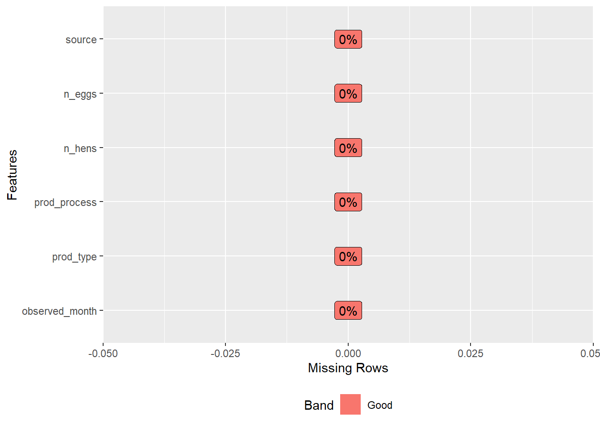
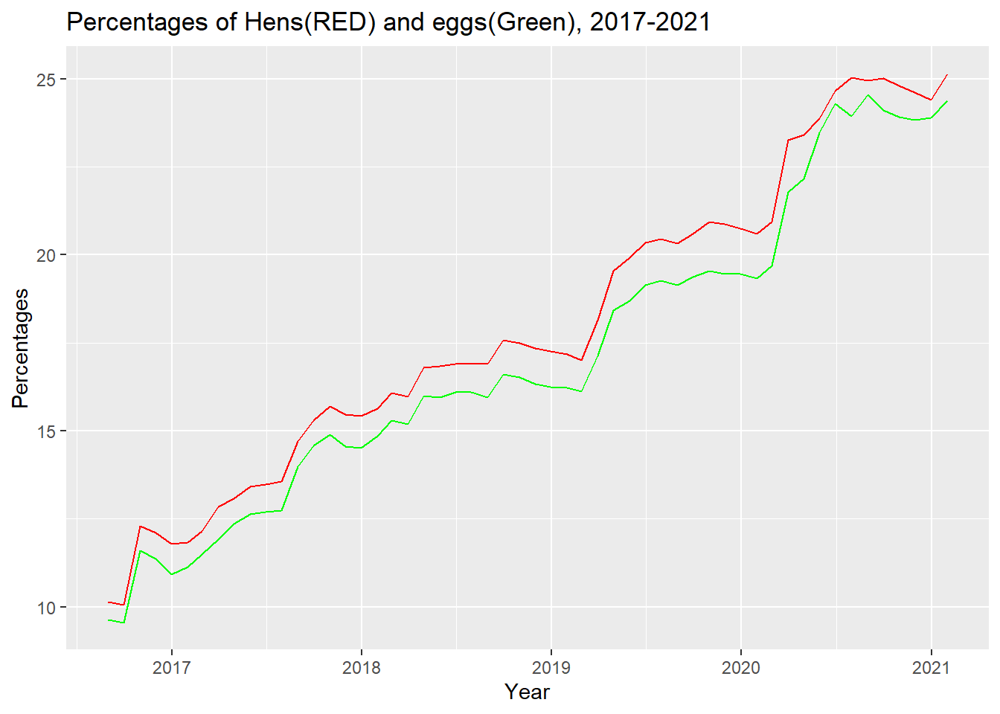

Rows: 220 Columns: 6
── Column specification ────────────────────────────────────────────────────────
Delimiter: ","
chr (3): prod_type, prod_process, source
dbl (2): n_hens, n_eggs
date (1): observed_month
ℹ Use `spec()` to retrieve the full column specification for this data.
ℹ Specify the column types or set `show_col_types = FALSE` to quiet this message.
Rows: 96 Columns: 4
── Column specification ────────────────────────────────────────────────────────
Delimiter: ","
chr (1): source
dbl (2): percent_hens, percent_eggs
date (1): observed_month
ℹ Use `spec()` to retrieve the full column specification for this data.
ℹ Specify the column types or set `show_col_types = FALSE` to quiet this message.
cagefree percentages seems like has almost half missing values
plot_missing(eggproduction)

#looks like the eggs production looks like a complete dataset with no missing values.
view(eggproduction)
#there seems to be an imbalance where hatching eggs only has “all” observation, table eggs seem to have all three different process types. so removing the hatching eggs obsevation for a better analysis.
#now lets understand what the missing values are about in the cage free percentages dataset
view(cagefreepercentages)
#It looks like those from Egg-Markets-Overview-2019-10-19.pdf dont have percent egg computed, since we dont have the denominator we cannt compute so best to remove NA’s
#Eggfee percentages variabls include #data/percentegg/percenthen/source with n=54 #eggproduction variables include #producttype/productprocess/eggs/hens/sources with n=220 #by combining the two datasets we should have
#lets plot some graphs and see if there are any relationships
ggplot(cagefreepercentages,aes(observed_month))+#basic graph objectgeom_line(aes(y=percent_hens), colour="red") +#layor 1geom_line(aes(y=percent_eggs), colour ="green")+#layor 2ggtitle("Percentages of Hens(RED) and eggs(Green), 2017-2021")+xlab("Year")+#add x axis labelylab("Percentages") #add y axis label

#seems like there is a relationship here with both hens and eggs percentages with an upward trend over time, note: I was not able to add the legend in the graph function
#This figure illestrates the two different product types (hatching eggs and table eggs) and the three different process types caged-organic, caged-non organic and all. Hatching eggs contains only “all” value whereas table eggs has equal amount of caged organic, caged non-organic and all(combined). #still trying to find inspiration from this data. #Perhaps we can go ahead and merge these two datasets for a more complete picture.
#Merge two datasets based on their common variable (inner join) observed month
merged<-merge(x = cagefreepercentages, y = eggproduction, by =c("observed_month"))
The above table shows all prod process types are available for hatching eggs where as cage free organice and non organic are available only for table eggs.
Next steps , removing “all” observations from hatching eggs so that we are left with table eggs only with three prod process types. #here I got stuck with an error about deleting atomic verctors..